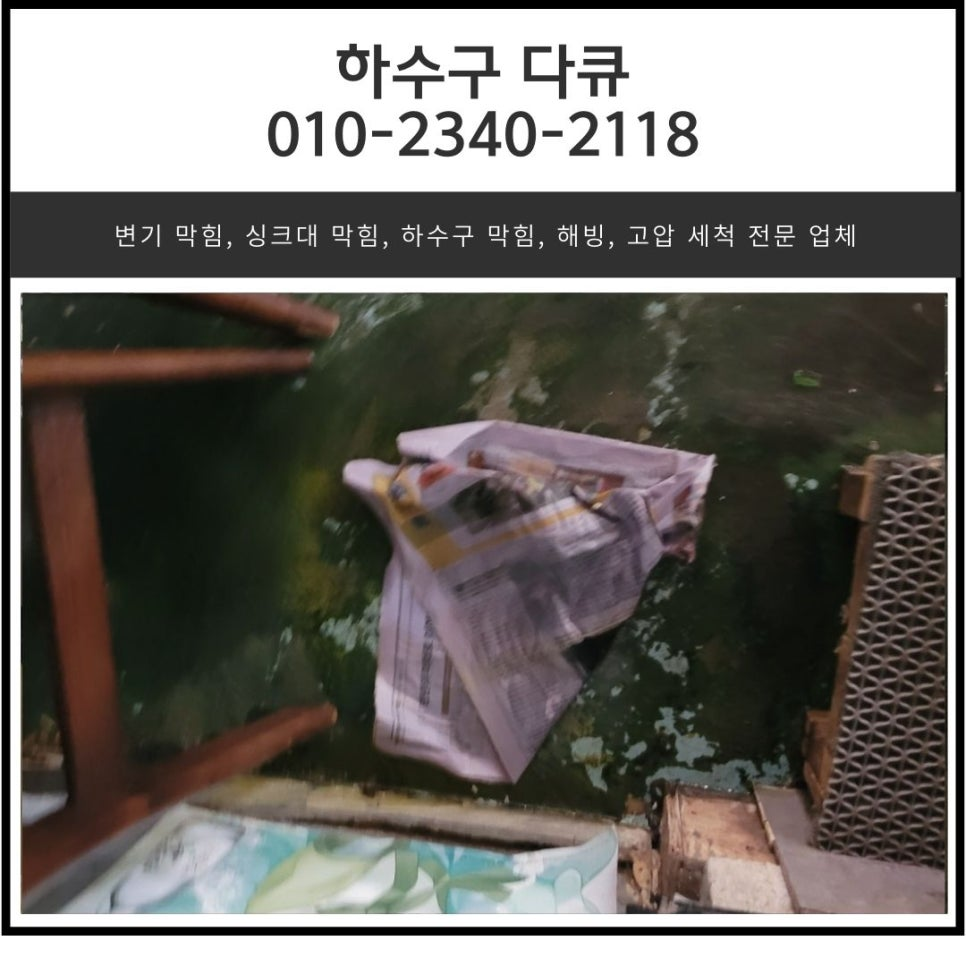
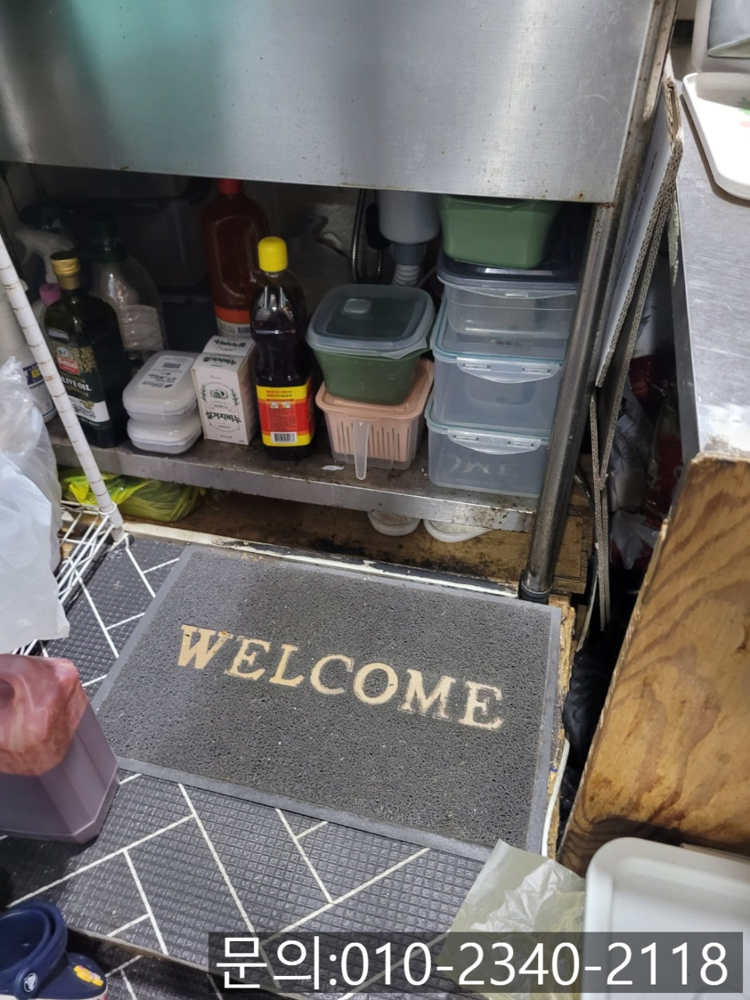
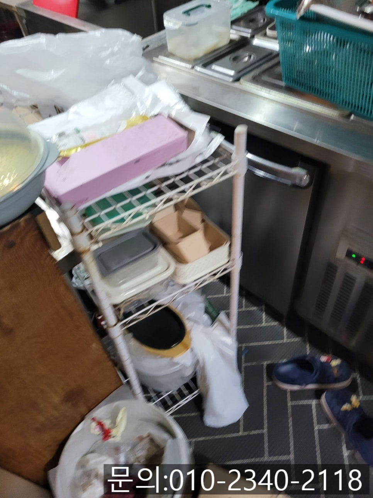
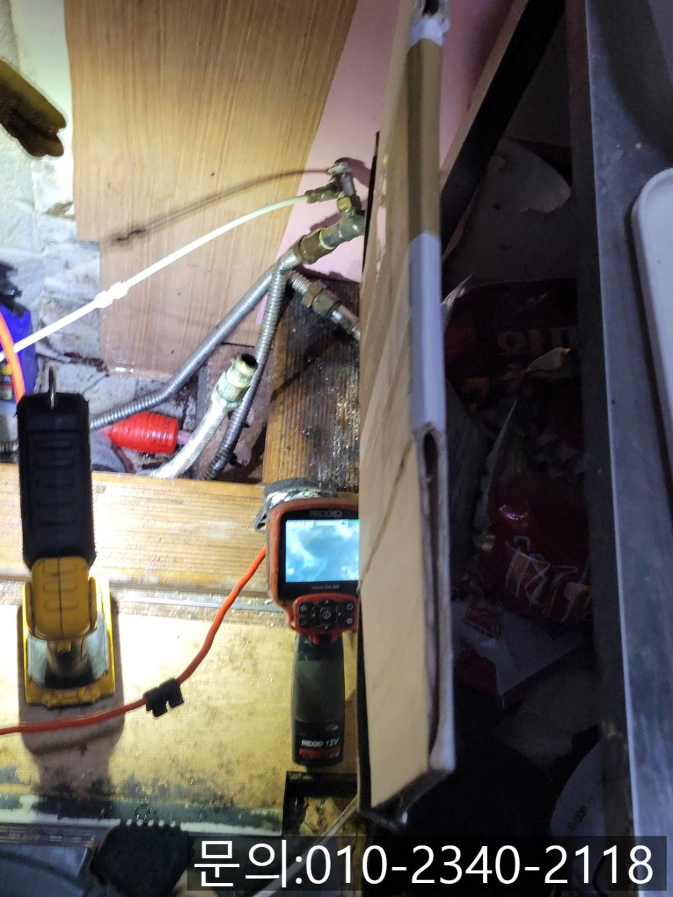
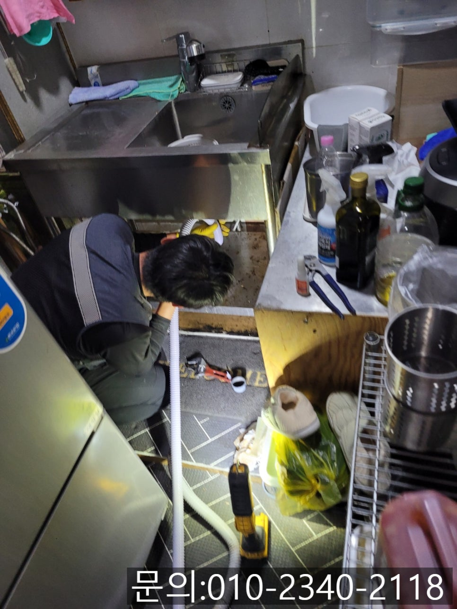
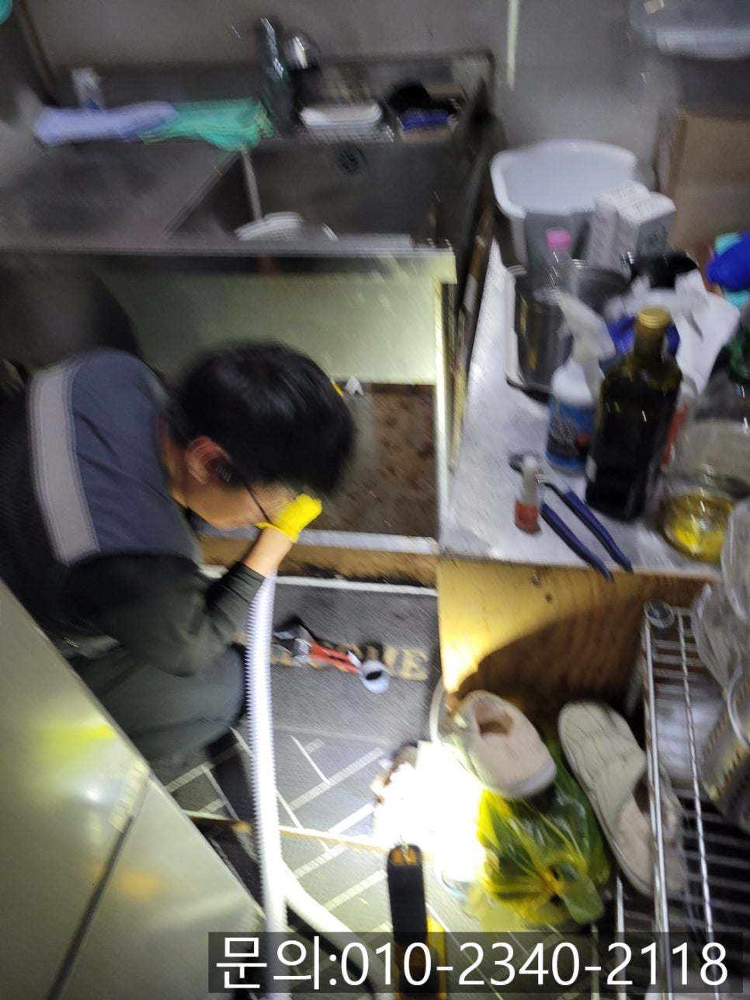
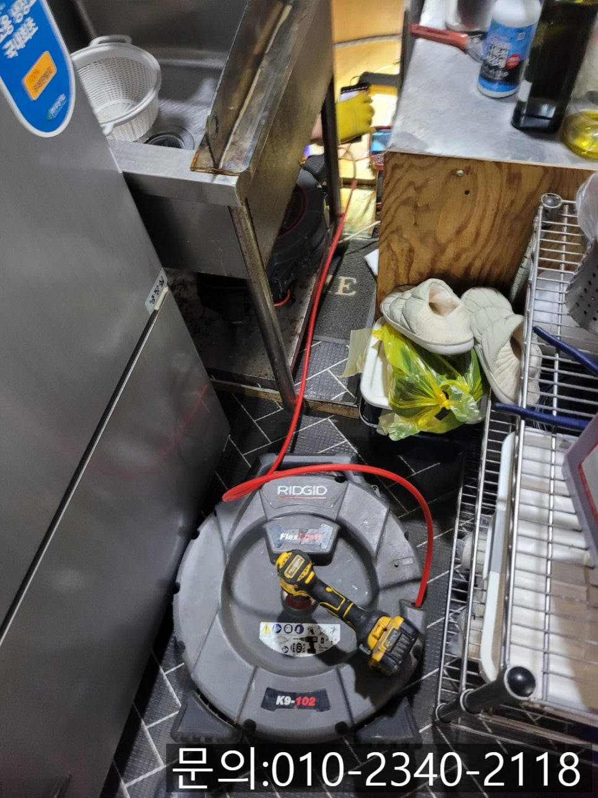

🏠 금토동 싱크대 막힘 수정구 시흥동 식당 하수구 물 안 내려갈 때 뚫는 업체
시흥 싱크대막힘 전문 시공 후기

📋 작업 개요
- 위치: 시흥
- 서비스 유형: 싱크대막힘, 하수구막힘, 배관막힘, 뚫는업체, 배관청소, 고압세척
- 작업 일시: 2025. 4. 29. 21:19
- 업체명: 하수구수사대 (010-5615-2118)
🔍 문제 상황
안녕하세요.
금토동 싱크대 막힘, 수정구 시흥동 식당 하수구 물 안 내려갈 때 뚫는 업체 하수구 다큐입니다.
요즘 배달 전문 음식점이 점점 많아지고 있습니다.
홀 없이 주방만 운영하는 구조 덕분에 운영이 간편하죠.
하지만 주방이 바쁘게 돌아가는 만큼, 금토동 싱크대 막힘 문제가 자주 일어날 수밖에 없습니다.
금토동 싱크대 막힘이 발생하게 되면 식재료 손질부터 어려워지고 주방 전체가 마비되며, 고객님들께 들어온 주문의 배달이 지연되거나 위생문제로 이어질 수 있어 조속한 해결이 필요합니다.
음식점 싱크대가 막히는 주요 원인으로 첫 번째, 기름기와 음식물 찌꺼기를 들 수 있어요.

🔎 원인 분석
💡 전문가 진단: 정밀 진단 장비를 사용하여 슬러지의 고착 여부를 판명하고 타격/세척 작업을 실시했습니다.
조리를 하고 남은 기름이나 음식물 찌꺼기가 배수구로 들어가고 시간이 흐르면서 내부에서 굳어 막힘이 발생하게 됩니다.
두 번째로, 식기를 닦기 위해 사용한 세제와 기름이 반응해 끈적한 덩어리가 형성되고 조금씩 배관 내부에 쌓이면서 물의 흐름을 방해하게 됩니다.
세 번째로, 잔반처리 부주의를 들 수 있는데요.
음식물 찌꺼기를 거름망이 없는 상태에서 흘려보내거나, 거름망을 자주 청소하지 않으면 음식물이 흘러들어가 쌓이게 됩니다.
오늘은 수정구 시흥동 식당 하수구 물 안 내려갈 때 뚫는 업체 하수구 다큐가 다녀온 현장 사진을 보면서 뚫는 방법을 소개해 드릴게요.
시흥동에 위치한 배달 전문 업체에서 하수구 물이 안 내려간다며 전화를 주셨습니다.
당장 주문이 많이 들어오고 있는 상태로 최대한 빨리 와서 해결해달라고 요청하셨어요.
한창 바쁠 시간에 주방이 말썽이면 얼마나 답답한지 알기 때문에 고객님께 주소를 받아 20분 만에 현장에 도착할 수 있었습니다.

🔧 작업 과정
싱크대 막힘에 필요한 장비들만 챙겨 주방으로 들어가 봤어요.
배달 전문 식당답게 작은 규모의 주방이었습니다.
도착하자마자 통수 테스트를 하고 내시경 카메라를 이용해 배관 내부를 점검했습니다.
예상했던 대로 많은 양의 기름 슬러지가 물의 흐름을 방해하면서 막힘이 발생했던 것 같아요.
우선 석션을 이용해 배관에 쌓인 이물질을 제거해 주면서 배관 청소를 시작했습니다.
오늘 사용하게 될 장비는 플렉스 샤프트에요.
플렉스 샤프트(Flex Shaft)란?
플렉스 샤프트는 고속 회전하는 유연한 노즐에 체인을 연결해 배관 내부의 기름때, 음식물 찌꺼기, 이물질 등을 정밀하게 제거할 수 있는 특수 장비로 음식점처럼 기름 슬러지가 많은 배관에 가장 효과적으로 사용할 수 있는 장비입니다.
내시경 카메라를 이용해 이물질의 정확한 위치를 확인하고 플렉스 샤프트를 투입해 빠르게 회전시키면 기름과 음식물 찌꺼기들이 벽에서 떨어져 나가고 석션을 이용해 빨아드려 완벽하게 세척해 주니 배수상태가 원래보다 더 좋아졌다고 사장님이 웃으셨습니다.
통수가 정상적으로 이루어지는 것을 확인했지만 내시경 카메라를 이용해 잔여 이물질은 없는지 꼼꼼하게 확인하는 작업도 진행했어요.
사진에 보이는 것처럼 깨끗해진 배관 내부를 확인할 수 있었습니다.
사장님께서는 주문이 많은 시간이라 걱정했는데 빨리 원인을 파악하고 시원하게 뚫어줘서 고맙다고 음식도 싸주셔서 감사했던 현장이에요.


✅ 작업 완료
싱크대 막힘은 음식을 만드는 곳이라면 언제든 발생할 수 있습니다.
하수구 막힘이 발생하면 고민하지 마시고 연락 주세요.
완벽하게 뚫어드리겠습니다.




⚠️ 주방 싱크대 배관 막힘 예방 수칙
- ✅ 기름기가 묻은 식기나 프라이팬은 설거지 전 키친타올로 반드시 기름때를 닦아내세요.
- ✅ 주기적으로 싱크대 개수대에 뜨거운 물을 가득 받아 한 번에 내려 배관 내부 기름을 씻어내세요.
- ✅ 배수구 거름망을 미세한 필터로 사용하시고 음식물 찌꺼기가 틈으로 새어 들지 않게 관리하세요.
- ✅ 베이킹소다와 식초를 뜨거운 물과 함께 일주일에 한 번씩 부어주면 배관 살균과 막힘 예방에 좋습니다.
💡 핵심 정리
- 확실한 장비 작업(내시경 점검 및 샤프트 스케일링)으로 원인을 뿌리 뽑습니다.
- 작업 후 1년 이내에 동일한 부위 재발 시 100% 무상 A/S 서비스를 보장합니다.
- 서울 · 경기 · 인천 전 지역에 24시간 언제든 긴급 출동할 수 있도록 항시 대기 중입니다.
❓ 자주 묻는 질문 (FAQ)
🚨 시흥 싱크대막힘 문제로 고민이신가요?
정확한 원인 진단과 확실한 시공으로 재발 없는 해결을 약속드립니다.
24시간 긴급 출동 | 서울 · 경기 · 인천 전지역 | 1년 내 재발 시 무상 A/S